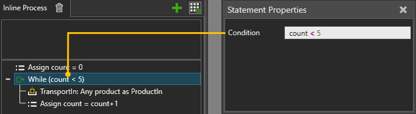

A While statement allows you to execute a scope of statements in a loop as long as the condition is true.

| Name | Description |
| Condition | Defines an expression that when evaluated must return a True
or False value.
True value executes a scope of statements, and then the program would loop back and reevaluate Condition before executing the next iteration. False value does not execute a scope of statements and ends the statement. See also Process Statement Expressions. |